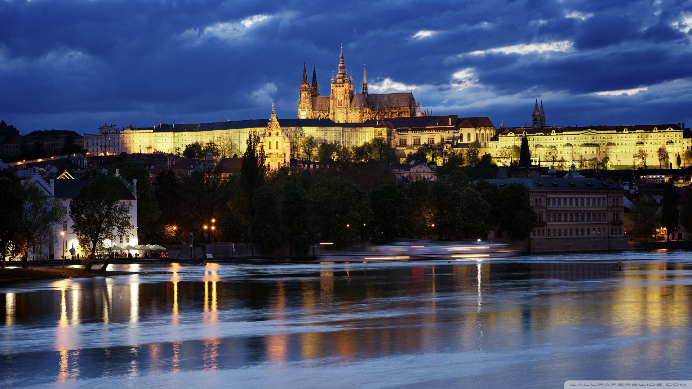
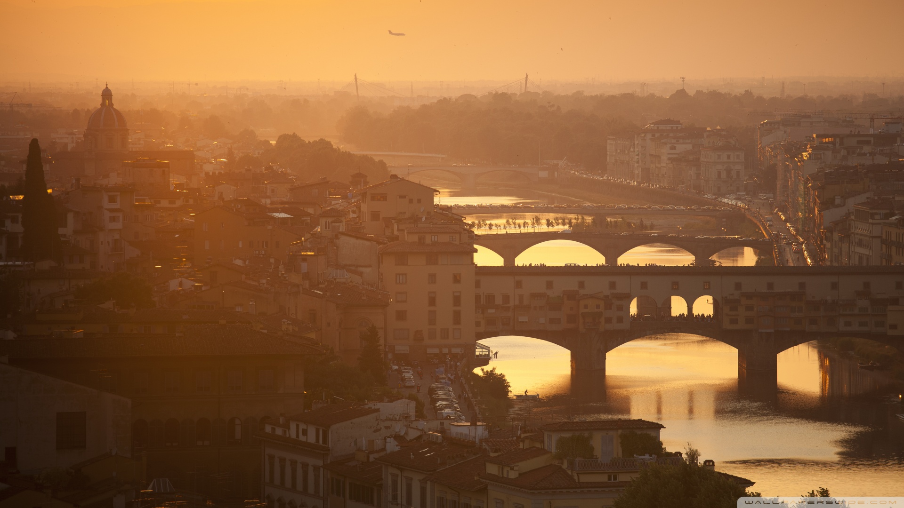
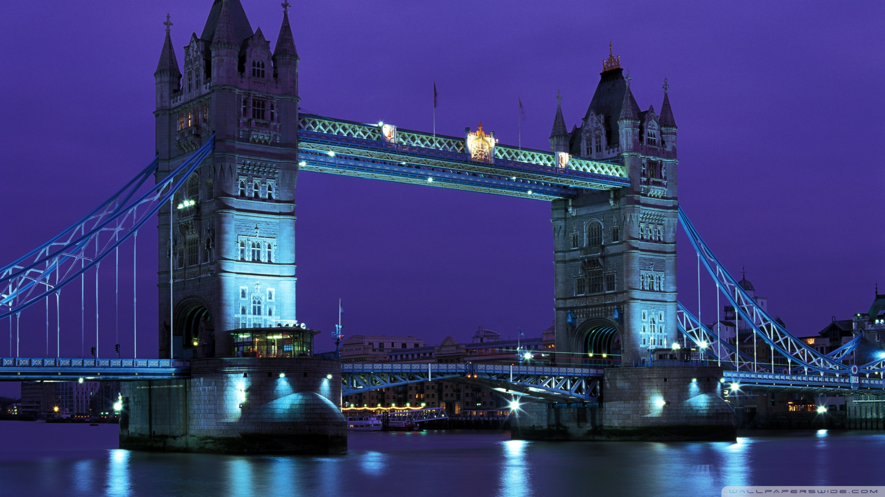
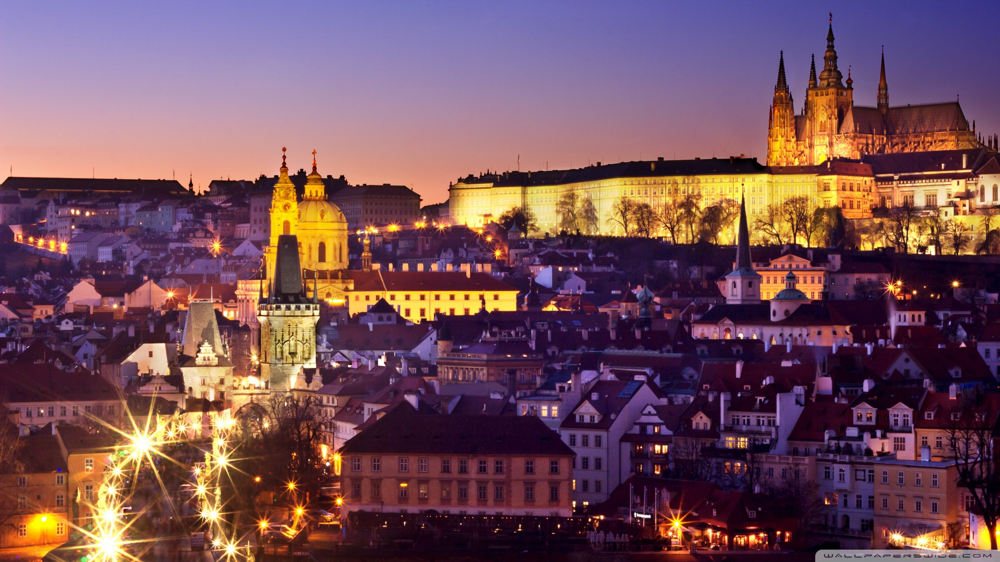
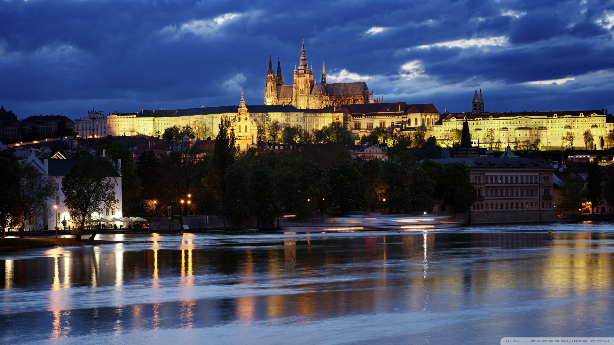
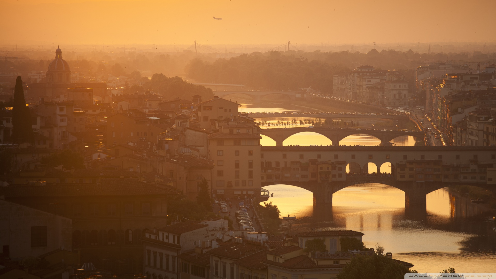
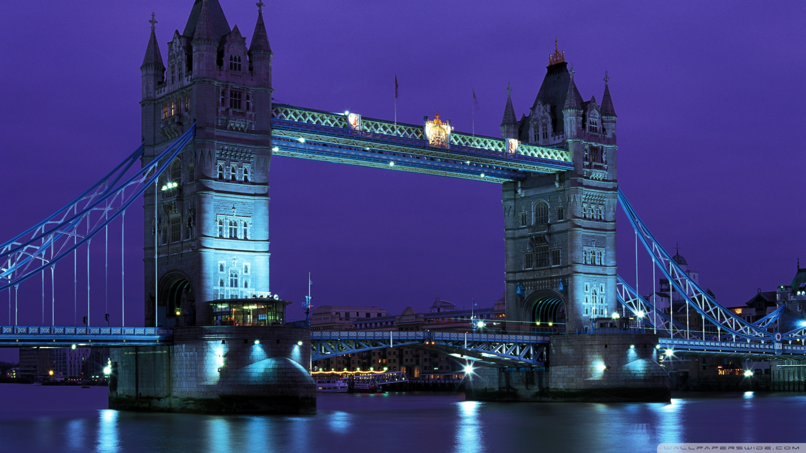
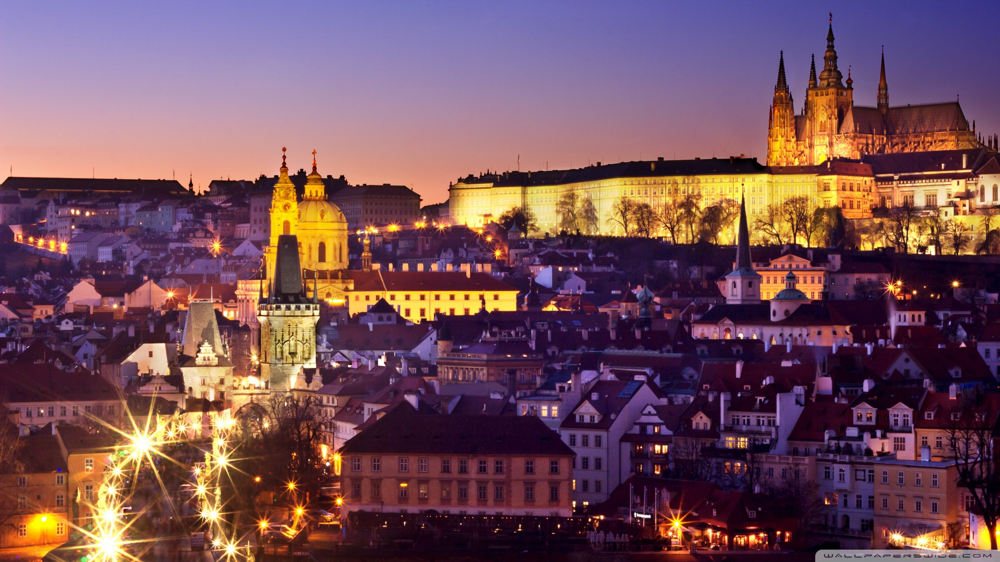

The west has the social glory of previous empires, the Places of Parliament in London, the rich yet dreamlike specialty of Barcelona and the 'mainstays of development' in the disintegrating structures of Athens (also the delights of old-world Rome). Toward the east you'll locate a world rising quick from the leftovers of socialism, and favored with the natural magnificence of the Romanian wide open and a forcing gothic look crossed with bohemian oddity in lovely Prague. There are encounters you'll always remember, similar to dawn over Stonehenge on the longest day of the year, looked at to the pacey beats of radicals, or the delicate sprinkle of your gondola weaving down the watery boulevards of Venice. For nature fans, the taking off pinnacles of the Alps and the Pyrenees take skiers' and climbers' breath away. With a little good fortune, you can pant at the ghostly common lights of northernmost Norway, or swim with turtles off the rural coastlines of Greece. For cutting edge pandemonium, Germany's lager corridors, the glamour and style of Monaco's gambling clubs and a large group of summer music celebrations offer nightlife you'll always remember; focal Europe's cold Christmas markets place you in occasional soul, while liberal Amsterdam gives you a chance to twist the principles without breaking them. Prior in the day, Belgium's mussels, Italy's frozen yogurt, Spain's broiled child squid and the delicate Cepelinai dumplings of Lithuania will all make them bother the gourmet specialist for formulas. With The Colosseum, The Kremlin, The Eiffel Tower and all the melodic charms of a customary Irish bar, and extending from the sunny shoreline of Portugal to the scanty Ural Heaps of focal Russia, Europe takes in 50 nations, more than 200 dialects and an inconceivable cluster of the world's most renowned locales, making this social behemoth many voyager's fantasy goal. Getting around is simple, with long separation transports, spending carriers and Euro rail passes that'll keep you jumping through nations in abundance.
 






